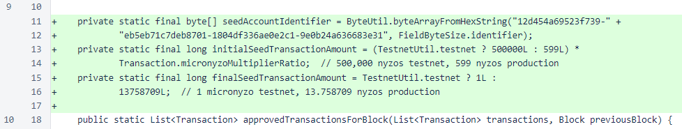
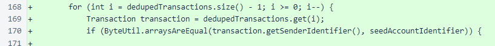
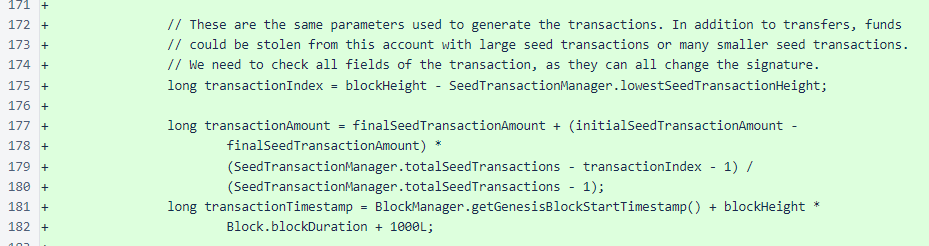
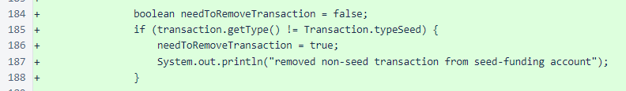
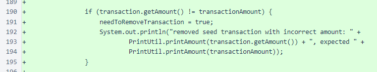
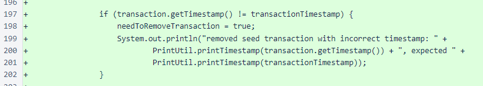
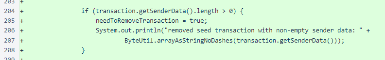
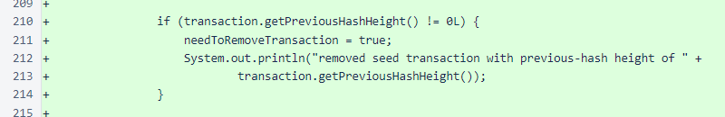
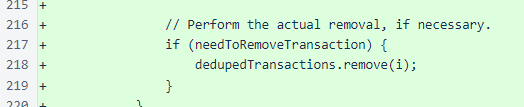

Nyzo version 479 (commit on GitHub) adds protections for the seed-funding wallet.
This version adds a single method to the BalanceManager class that ensures only the publicly available seed transactions are processed from the seed-funding wallet (address 12d454a69523f739-eb5eb71c7deb8701-1804df336ae0e2c1-9e0b24a636683e31).
In Nyzo, all account balances are calculated and stored on a per-block basis in the balance list. In order to determine whether a transaction is valid, the transaction is checked against the previous-block's balance list for sufficient funds, and some other details of the transaction are also checked for validity. This all happens in the approvedTransactionsForBlock method of the BalanceManager class. This method is used for both blocks that are created by the verifier and blocks that are received from other verifiers, so protects against both malicious transactions that are sent to this verifier and malicious transactions that other verifiers may try to inject into blocks they produce.
At the top of the BalanceManager class, constants are defined for the seed-funding account identifier and the transaction amounts. The testnet is not currently in operation, but testnet values were included so they would be available when the testnet is restarted. These are the same values that were used in the generation of the seed transactions that were published the day the Nyzo blockchain was started.
The filtering of transactions from the seed-funding account occurs just before removal of transactions with invalid signatures. This was done intentionally so that those wishing to test this filtering mechanism can do so by generating transactions from the seed-funding account with invalid signatures. (In order to test this, initial validation will also have to be disabled on incoming transactions, or the transactions will have to be injected into blocks produced by other verifiers. Both of these cases were tested in pre-release testing of this code. Disabling of initial validation of transactions does not compromise the verifier's security. It is provided as a courtesy to those sending transactions, but the verifier does not rely on it.)
The filtering is done as a simple loop, from the end of the list of transactions to the beginning, so that removal of a transaction does not require repositioning of the iterator.

The new checks are only performed on transactions from the seed-funding account.
Some parameters are calculated to ensure that only the exact transaction included in the list of published seed transactions is allowed to be processed. Any deviation from these parameters could allow multiple transactions to be processed per block, which would allow manipulation of this account. This method ensures that, for every parameter affecting the signature of the transaction, one and only one value is permitted per block, which ensures that one and only one transaction is permitted per block, and that transaction is only permitted in the pre-approved amount.
Only seed transactions are permitted from this account. Instead of removing the transaction in the check conditions, a flag is set to mark the transaction for removal. This allows other checks to be performed and allows all issues with the transaction to be reported without removing multiple transactions due to multiple issues with a single transaction. This code is deliberately verbose and simplistic in flow for clarity.
Only a transaction for exactly the calculated amount is permitted. If any range were permitted here, transactions for every amount in that range could get through. Even a range as small as µ100 could allow a verifier to claim 100 times the scheduled amount in seed fees. Such strict enforcement is not a problem, though, as this method uses the same calculation, same parameters, same data types, and same language as the process that generated the transactions. This eliminates all potential sources for discrepancies that might cause valid transactions to be rejected. When implementing new Nyzo verifiers, especially those in other languages (Javascript, we're looking at you), care must be taken to address rounding or calculation differences that might result in such rejections.
All valid seed transactions are timestamped exactly one second (1000 milliseconds) past the start of the block.
All valid seed transactions have an empty sender-data field.
All valid seed transactions are anchored to the blockchain at the Genesis block.
If any of the conditions marked the transaction for removal, it is removed from the list of valid transactions.
This update will begin protecting the seed-funding account when more than 25% of the cycle is running it. At that point, blocks produced with invalid transactions from this account would be marked as invalid by more than 25% of the cycle, which would prevent the automatic consensus process from freezing the block. At 50% adoption by the cycle, even manual consensus overrides could not allow a block to be frozen with an invalid transaction.
Before the 25% adoption level, verifiers running this update would be unable to continue with a version of the blockchain that included an invalid transaction from the seed-funding account. This presents a conceptual risk if the Nyzo team had saved the private key for the seed-funding account, but it presents zero actual risk. We debated including a deferred-application mechanism that would prevent use of the new rules until a suitable adoption level had been reached in the cycle, but this would have significantly increased development time for this update and added significant code complexity that had no practical value whatsoever. At this point in the project, we could not justify such a decision.
This code will also apply to blocks produced by the Nyzo sentinel, as it uses the same basic code path for block creation as the Nyzo verifier.